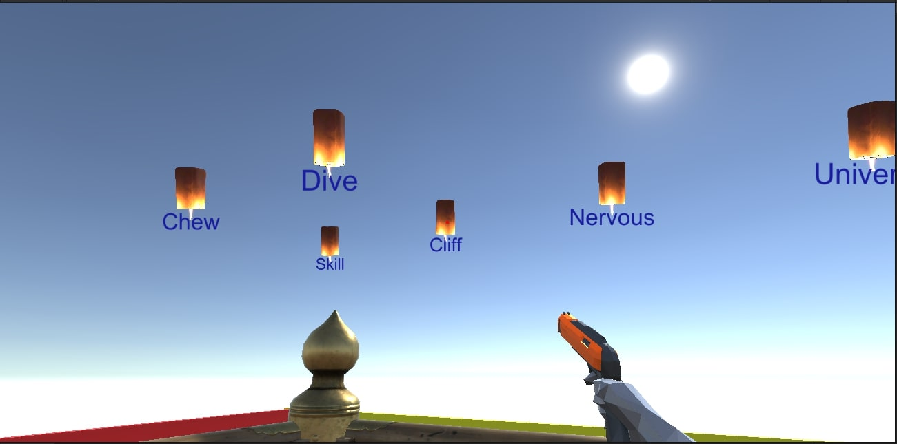
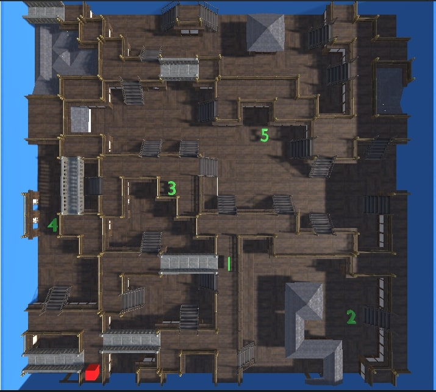
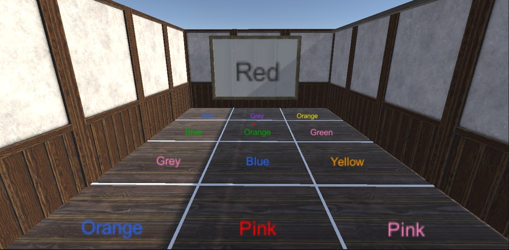
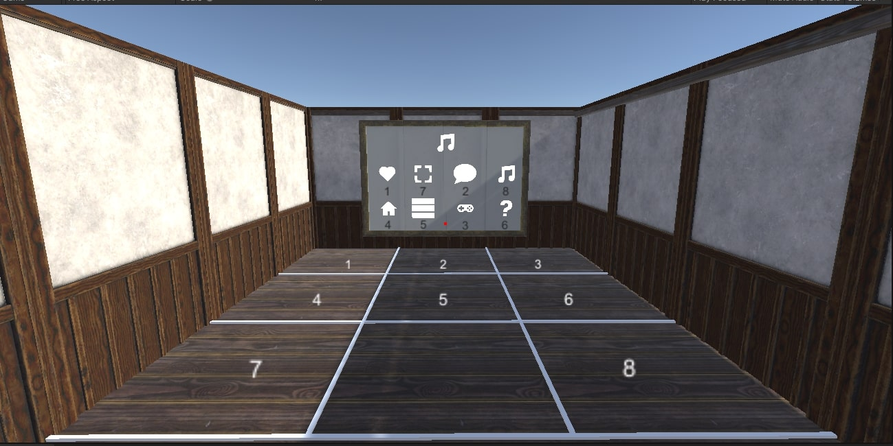
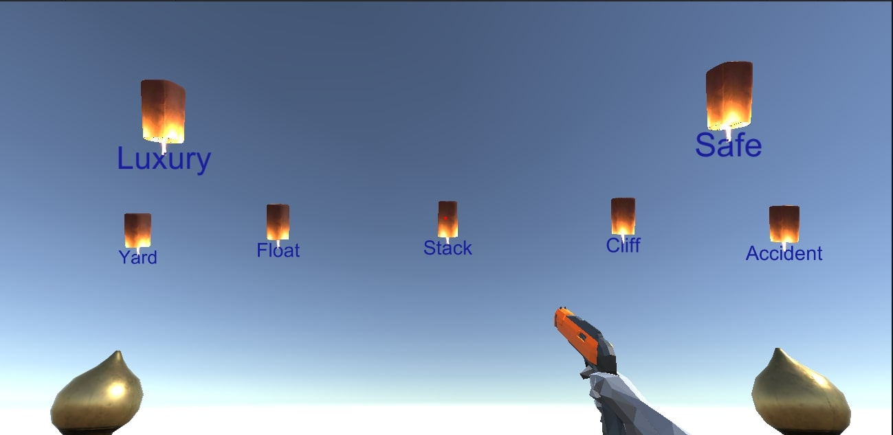

Method

Game
The proposed game was created based on five different cognitive assessments similar to BrainCheck’s battery test:
- Immediate Recall
- Trail Making Test
- Stroop Test
- Digit Symbol Substitution Task
- Delayed Recall
The game was developed in a 3D environment with Unity and use WEKA for data classification.
5 Game Levels
This thesis presents an alternative way to group players from the most similar playing behaviors by using the play data collect from the game. Similar to this paper, data were collected by the game we created based on BrainCheck's cognitive assessment battery with a three-dimensional environment (3D environment) which also be able to be effective in promoting player engagement.
Level 1: Immediate Recal
The Immediate Recall measures the participant’s ability to correctly recall seen words before and after a period of time. First Immediate Recall is measured by answering whether a word was just seen or not from a list of 20 words.
Task
- Shoot the lanterns with words previously shown on the board.
Level 2: Trail Making Test A
Trail Making Test is a neuropsychological test of visual attention and task switching. The participants are instructed to connect 25 numbers from 1 to 25 as fast as possible. The task measures visual search speed, scanning, speed of processing, mental flexibility, and executive functioning. Trail Making Test A uses only numbers (1 to 25) while Trail Making Test B uses letters and numbers (1-A-2-B-3-C-...).
Task
- Collect numbers in order from 1 to 5 as fastest as possible.
Level 3: Stroop Test
The Stroop Task measures the reaction time used to overcome cognitive interference. Naming the word with incongruent color takes longer and is more likely to make mistakes in contrast to when the word and color are congruent, commonly used as a measure of executive function.
Task
- Search and jump over the tile with word of the color that matches to the board.
Level 4: Digit Symbol
The Digit Symbol Substitution Task measures general cognitive performance. On the paper test, participants must match the symbol to a number quickly and correctly by pressing the number. This continues for a set duration.
Task
- Search and jump over the number tile corresponds to the symbol on the top of the board.
Level 5: Delayed Recall
 Delayed Recall task measures player long-term memory. At the end of the battery test, without seeing the original list again, participants are presented with the 20 previous words before and asked if they have seen them or not.
Task
- Shoot the word lantern with the same word shown previously on the level 1.